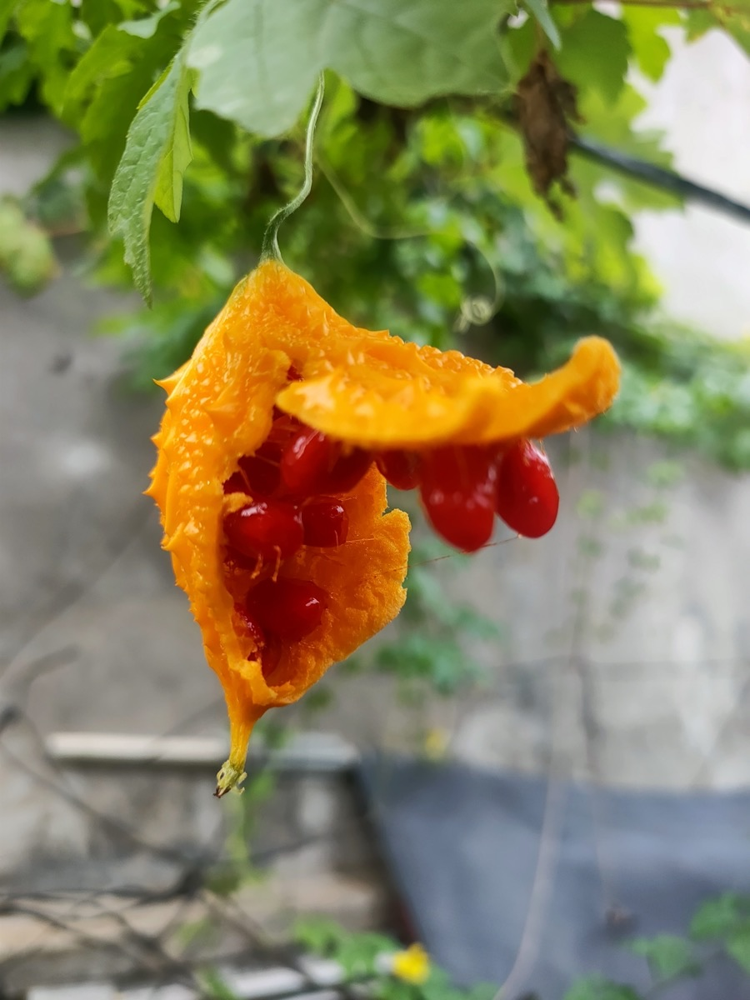
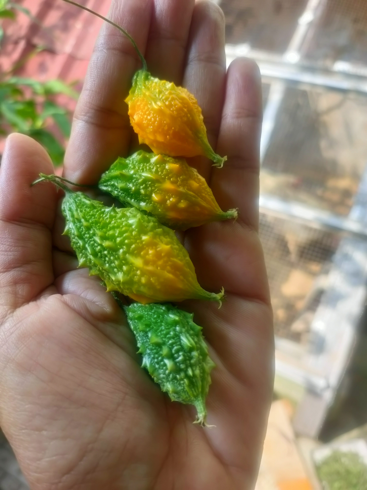
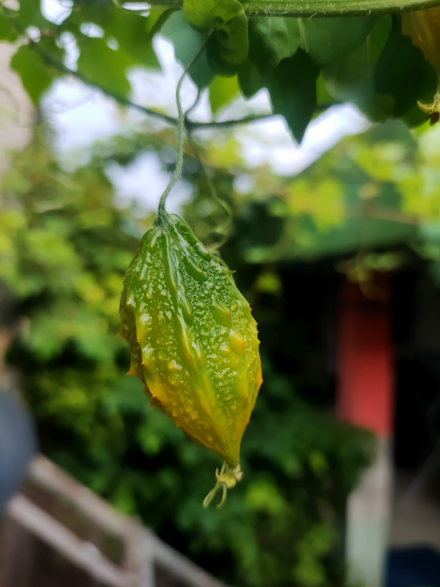

Selama ini kita kenal pare sebagai sayuran pahit yang cuma enak ditumis atau direbus. Gw sendiri udah puluhan tahun makan pare — dan baru sekarang sadar kalau kita semua salah fase panen.
Dare gw bilang: lo belum kenal pare yang sesungguhnya.
1. Gue Tertipu Selama 25 Tahun
Pare hutan — atau yang dikenal sebagai paria kecil, Momordica charantia var. muricata — punya dua wajah yang beda banget tergantung fase panennya. Ini yang ga pernah diajarkan di sekolah, ga pernah dibahas di pasar.

"25 tahun gw makan pare, baru tau ini ada yang MANIS?? Kok gw ga dikasih tau dari dulu?? 😲"
Kenapa kita gak pernah liat yang oranye? Karena petani panen pare saat masih ijo buat sayur. Kalo dibiarin mateng, buahnya cepet pecah dan gak laku dijual. Jadinya langka banget di pasar. Yang oranye ini cuma bisa lo dapet kalo nanam sendiri.

2. 4 Fase Hidup Pare Hutan dalam Satu Genggaman
Ini yang bikin pare hutan beda dari sayuran lain — dia punya siklus warna yang bisa lo baca kayak baca buku. Dari bawah ke atas:

3. Fase Kritis: Kuning Menuju Oranye
Dari warna kuning ke mekar sempurna cuma butuh 1–2 hari. Ini momen paling kritis — kalau telat petik, buahnya jatuh dan bijinya disebar burung. Sekaligus ini adalah momentum terbaik buat panen bibit.


"Visual oranye + biji merah itu... gila estetiknya. Alam tuh beneran lebih kreatif dari desainer mana pun. ✨"
Gw nemu fenomena ini di kebun Bunker Opanowski Ciracas — dan langsung ngerti kenapa ini bukan hal yang umum diketahui. Kalau lo ga nanam sendiri, lo ga bakal pernah liat fase ini.
4. Rasanya Kayak Apa Sebenarnya?
Selaput merah yang nyelimutin bijinya itu rasanya manis, legit, teksturnya kayak buah markisa tapi tanpa biji keras. Anak-anak di kampung suka ngemilin ini langsung dari pohon — gw juga langsung nyoba dan beneran kaget.
Yang manis cuma selaput merahnya saja. Bijinya sendiri keras dan tidak dimakan. Kulit oranye-nya sudah lembek & pahit aneh — jangan dimakan.
5. Amankah Dimakan? Fakta & Peringatan
100% aman untuk selaput merahnya. Di beberapa negara Asia & Amerika Selatan, ini dijual sebagai "gac fruit candy" atau "cerasee fruit". Tapi ada beberapa hal yang perlu diperhatikan:
Jangan makan kulitnya saat sudah oranye. Jangan makan berlebihan dalam kondisi perut kosong. Ibu hamil sebaiknya hindari — pare mengandung senyawa yang bisa memicu kontraksi.
6. Manfaat Lengkap Setiap Bagian Pare Hutan
Ini yang bikin pare hutan istimewa — dari akar sampai biji, semuanya punya manfaat:
| Bagian | Fase | Manfaat |
|---|---|---|
| Buah Hijau | Muda | Obat diabetes, kolesterol, anti-parasit |
| Daun | Semua fase | Teh herbal, obat demam, penurun gula darah |
| Biji Merah | Matang | Antioksidan tinggi, vitamin A, likopen |
| Akar | Tua | Obat tradisional untuk wasir & rematik |

"Dari akar sampe biji, semua bisa dipake! Ini bukan tanaman — ini apotek berjalan yang lo bisa tanam di pot! 💪"
7. Cara Nanam dari Biji Merah — 5 Hari Tumbuh
Kabar baiknya, lo bisa nanam dari biji merah yang lo dapat langsung dari buah matang tadi. Caranya simpel dan cepet:
8. Kenapa Bunker Opanowski Nanam Ini?
Ada alasan yang lebih dalam dari sekadar penasaran:
9. Tonton Versi Videonya
Kalau lo lebih suka nonton daripada baca, ini versi Shorts-nya langsung dari kebun Bunker Opanowski:

📌 Penutup — Tim Ijo vs Tim Oranye

"Akhirnya bisa buktiin sendiri dari kebun Ciracas. Biji merah manis itu nyata, bray — bukan mitos! 😊"
Jadi lo tim yang mana? Tim makan pare ijo pait buat kesehatan, atau tim nunggu oranye buat ngemil manis?
Kalau artikel ini ngebuka mata lo, share ke temen yang benci pare. Siapa tau dia jadi suka setelah tau ada fase manisnya.
Mau bibit pare hutan asli Ciracas? Stok terbatas karena gw juga nungguin buahnya mateng satu-satu. DM langsung ya.
Salam Lestari dari Bunker Opanowski! 🌿Tertarik nanam pare hutan? DM Instagram @BunkerOpanowski — stok bibit terbatas! 🌱